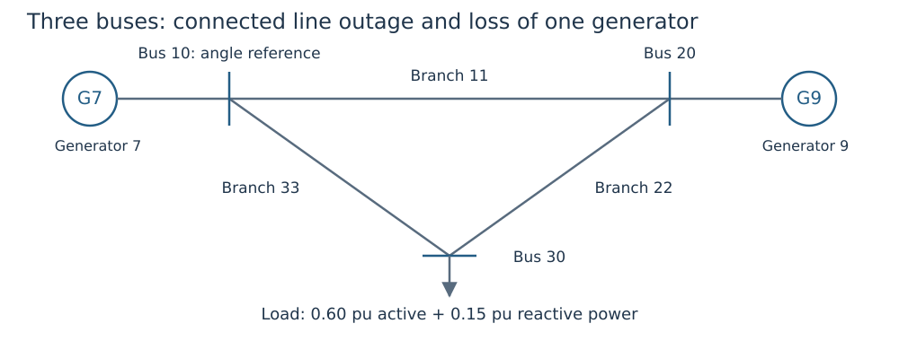

Your first security study
Goal: use one preventive dispatch and fixed curves for a base state, a line outage and a generator outage. This complete example runs during the documentation build. Read the single-state example and the policy tutorial first.
1. Use a network that has alternative supply paths

Figure 1. Removing branch 22 still leaves a supply path to bus 30. Removing generator 9 leaves generator 7 as the only active source.
The synthetic network is a triangle: branches 11 (bus 10–20), 22 (20–30) and 33 (10–30). Generator 7 injects at bus 10, generator 9 at bus 20, and the load consumes at bus 30. Bus 10 is the angle reference. IDs are intentionally nonconsecutive.
using DroopOPF
network = ACNetwork(
[Bus(10; reference=true), Bus(20), Bus(30)],
[Branch(id, f, t; resistance=0.01, reactance=0.10, thermal_limit=2.0)
for (id, f, t) in [(11,10,20), (22,20,30), (33,10,30)]])
generators = [Generator(id, bus;
p_min=0.0, p_max=1.2, q_min=-1.0, q_max=1.0,
initial_p=0.3, initial_q=0.0)
for (id, bus) in [(7,10), (9,20)]]
cap = ReactiveCapability(p_min=0.0, p_max=1.2, q_min=-1.0, q_max=1.0)
controls = [VoltVarDroop(
VoltageSchedule(1.0; v_db_low=0.99, v_db_high=1.01), m, cap; q_ref=0.0)
for m in [0.05, 0.075]]
attachments = [GeneratorControlAttachment(g.id, i, RegulatedLocation(:bus, g.bus_id))
for (i, g) in enumerate(generators)]
case = Case("teaching-security";
base_power=100.0, base_frequency=50.0, network=network,
loads=[Load(1, 30; p=0.6, q=0.15)], generators=generators,
controls=controls, attachments=attachments)Each generator's limits are 0–1.2 pu active power and −1–1 pu reactive power. The load consumes 60 MW and 15 MVAr on the 100 MVA base. The comprehension variable m is a positive droop slope in pu voltage/pu reactive power. enumerate supplies the array control index i separately from generator ID g.id. No equipment design variables or corrective tap/shunt actions are selected.
2. State the outages and response policy
study = Study(case;
contingencies=[Contingency(:line_22; branch_ids=[22]),
Contingency(:generator_9; generator_ids=[9])],
participation=default_participation(case))
result = solve_scopf(study;
smooth_epsilon=1e-5,
optimizer_attributes=Dict("print_level" => 0))
report = equilibrium_report(study, result)
@assert report.valid
sort!(collect(keys(result.states)); by=string)3-element Vector{Symbol}:
:base
:generator_9
:line_22Study defaults to preventive active dispatch with limit-aware automatic response. default_participation uses effective active-capability ranges; survivor weights are normalized for each outage. Curves stay fixed. Each surviving reactive controller responds to its scenario's measured voltage.

Figure 2. In this example the two outage boxes are :line_22 and :generator_9. Each has its own voltages and outputs; the base dispatch is not independently redesigned for each box.
The solver objective penalizes deviation of base generator outputs from their supplied references, as defined in the first OPF. Outage states add feasibility requirements. This is not a sum of independently optimized base cases.
3. Inspect what the generator outage actually changes
base = result.states[:base]
outage = result.states[:generator_9]
@assert abs(outage.pg[2]) <= 1e-8
@assert abs(outage.qg[2]) <= 1e-8
@assert outage.pg[1] > base.pg[1]
(base_P_MW=round.(100 .* base.pg; digits=3),
outage_P_MW=round.(100 .* outage.pg; digits=3),
surviving_unit_increase_MW=round(100 * (outage.pg[1]-base.pg[1]); digits=3))(base_P_MW = [30.101, 30.101], outage_P_MW = [60.273, 0.0], surviving_unit_increase_MW = 30.172)State vectors use generator order [7,9], so position 2 belongs to generator 9. The outaged unit has zero P/Q; its droop equation is inactive. Generator 7 must supply the load plus the changed network loss within its unchanged capability. The angle-reference bus does not provide additional hidden generation.
4. Test outage availability independently
corrupted = deepcopy(result)
corrupted.states[:generator_9].qg[2] = 0.1
corrupted_report = equilibrium_report(study, corrupted)
@assert !corrupted_report.valid
@assert :unavailable_generator in corrupted_report.violations[:generator_9]
(original_valid=report.valid, corrupted_valid=corrupted_report.valid)(original_valid = true, corrupted_valid = false)The intentionally restored 0.1 pu reactive output is 10 MVAr from a failed unit. Rejection is necessary even if some other bounds appear satisfactory.
5. Describe coverage honestly
This example checks two selected outages, not the full $N-1$ catalogue. Use contingency_catalog(case) to enumerate available device losses and inspect eligibility/islanding before deciding the required coverage. A successful small study is not evidence about unlisted outages, larger systems, discrete movement or transient stability.
To design a shared curve next, use bounded parameter design. To add omitted outages iteratively, use contingency addition, which still requires complete final assessment of the declared eligible catalogue.